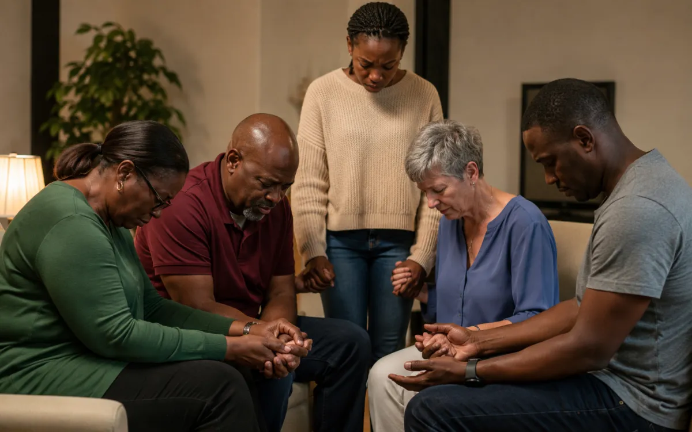

Guided Prayer
Structured sessions that help people pray through scripture, worship and focused themes.
Our Pillars of Calling
Building a culture of prayer, revival and intercession to sustain spiritual breakthrough and impact in lives, families, campuses and communities.
The Engine Room
The Prayer Ministry is the spiritual engine room of Kingship Christian Centre. Through intercession, prayer meetings, fasting gatherings, all-night prayer, revival services and personal ministry, we contend for awakening, healing, deliverance, breakthrough and renewal.
Prayer is not treated as a supporting activity. It is the foundation that strengthens worship, campus ministry, relationships, leadership and every expression of The Thrive Generation.
Let us pray with you →How We Serve
Each expression of the ministry is designed to help individuals, families and communities encounter God and grow in a consistent life of prayer.
Intercession
We pray intentionally for individuals, families, campuses, communities, leaders and nations. Intercession creates a space where burdens are carried together and where people are reminded that they do not have to face difficult seasons alone.
The Prayer Room
The Prayer Room will provide a consistent environment for believers to seek God, receive personal ministry and grow in the discipline of prayer. It will host guided prayer sessions, quiet personal prayer, intercession watches and focused gatherings around specific needs.
Structured sessions that help people pray through scripture, worship and focused themes.
A peaceful space for private devotion, reflection and seeking God personally.
Teams praying consistently for the church, families, campuses and communities.
Compassionate prayer support for those trusting God for healing, direction or breakthrough.
Fasting Gatherings
Fasting gatherings create intentional seasons of consecration, scripture, worship and prayer. The purpose is not performance, but surrender—making room to hear God clearly and seek Him with humility.
Each fasting programme will include clear guidance, suggested prayer points and pastoral support. Participation will be approached responsibly, with consideration for health needs and personal circumstances.

Revival Services
Revival services combine prayer, worship, biblical teaching and personal ministry. These gatherings are intended to awaken hunger for God, strengthen faith, break spiritual strongholds and create room for healing and renewal.
Prayer Beyond the Building
As the ministry grows, prayer tours will carry intercession into cities, campuses and communities across South Africa, with a long-term vision for the continent and the world.
Praying intentionally around neighbourhoods, campuses and community spaces.
Partnering with churches and communities to strengthen prayer altars across cities.
Growing toward prayer missions that carry revival, unity and intercession across Africa.
Upcoming Prayer Gatherings
These dates are placeholders from the working September–December 2026 calendar and remain subject to final church confirmation.
Why Partnership Matters
Your partnership helps us host revival gatherings, support prayer-room development, organise prayer tours, provide prayer resources and equip homes, campuses and communities to encounter God and walk in breakthrough.
You Are Not Alone
Share your request privately through the website or send it directly to the centre on WhatsApp.